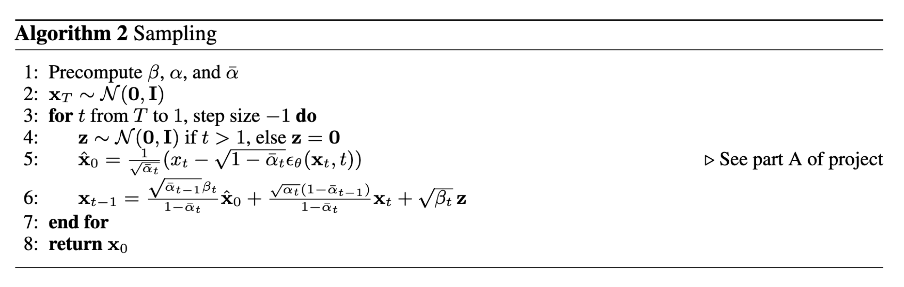

CS180: Intro to Computer Vision and Computational Photography
Fun With Diffusion Models
Natalie Wei (3037990373)
Overview
For this project, I explored the implementation and application of
generative diffusion models. First, I implemented simple denoising loops
for pre-trained models and extrapolated them to complex tasks such as
inpainting. Then, I implemented my own UNet model architectures and
successfully trained them for diffusion based on the MNIST dataset. From
working with pre-trained ones in Part A to training my own in Part B, I
gained a lot of hands-on experience with diffusion models. It was also
my first time implementing and training models from scratch.
Part A: The Power of Diffusion Models
Part 0: Setup
To start, I compared the results of the DeepFloyd model with different
prompts and num_inference_steps. Using
num_inference_steps of 5 produces visibly noisy images, and the
results for "a man wearing a hat" and "a rocket ship" don't resemble the
prompt at all. Increasing num_inference_steps to 20 improves the
quality of the results, and they all accurately match the prompts.
However, there are some unrealistic visual effects, like the smudged sky
in "an oil painting of a snowy mountain village" and crossed eyes in "a
man wearing a hat." At 50 num_inference_steps, the results are
far more detailed and realistic with the exception of "a rocket ship,"
which is cartoony and stylized instead. All of the results for this and
subsequent parts were generated with a set seed of 180.
"an oil painting of a snowy mountain village"

num_inference_steps = 5

num_inference_steps = 20

num_inference_steps = 50
"a man wearing a hat"

num_inference_steps = 20

num_inference_steps = 50
"a rocket ship"

num_inference_steps = 20
Part I: Sampling Loops
Section I: Implementing the Forward Process
The forward process scales and adds noise to an image by sampling from a
Gaussian distribution. I used the following equation to implement the
forward process as a function:
xt is the noisy image at timestep t,
x0 is the original image,
bar alphat is taken from alphas_cumprod at index
t, and epsilon is a Gaussian distribution computed using
torch.randn_like. The image gets noisier as t increases.

t = 0 (Original image)

t = 500
Section II: Classical Denoising
First, I tried to denoise the images from the previous part by applying a
Gaussian blur filter with a
kernel_size of 7. Evidently, Gaussian blur isn't a very effective
method, as the images are still noisy.
t = 500

t = 750 (Denoised)
Section III: One-Step Denoising
Next, I implemented an improved denoising method: one-step denoising.
Given a noisy image, one-step denoising estimates the Gaussian noise with
the UNet model and approximates the clean image by removing noise. Since
the forward process not only adds noise but also scales the image, I
appropriately scaled the estimated noise based on the forward process
equation. One-step denoising produced far beter results than classical
denoising, though its effectiveness decreased with noisier input images.
t = 0 (Original image)
t = 500
t = 0 (Original image)
Section IV: Iterative Denoising
To mitigate the issues of one-step denoising, I also implemented iterative
denoising. Iterative denoising, as the name suggests, repeatedly performs
one-step denoising at each timestep until a clean image is produced. I
optimized the process by skipping timesteps not found in
strided_timesteps, which starts at timestep 990 and takes steps of
size 30 until arriving at 0. At each step, I apply the formula below to
estimate xt' — the less noisy image at the next timestep
t' — based on the current image xt at timestep
t:
x0 is the current estimate of the clean image,
alphat is bar alphat divided by
bar alphat', and betat is 1 - alphat. While the iteratively denoised result isn't an exact match to the
original image, it's still higher quality than the one-step denoised
result and far better than the classically denoised result.
Original image
Section V: Diffusion Model Sampling
With iterative denoising complete, I moved onto generating images from
scratch. I generated pure noise using torch.randn and performed
iterative denoising with the prompt "a high quality photo", yielding the
results below. The images are generally passable, but don't hold up as
realistic photos upon a second glance.

Sample 4
Section VI: Classifier-Free Guidance
I improved the quality of the result images with classifier-free guidance
(CFG). While my previous implementation of iterative denoising only used
the conditional noise estimate, CFG uses both conditional and
unconditional noise estimates to determine the overall noise estimate,
where the unconditiional estimate is the noise estimate under a null
prompt. I revised my implementation to compute the noise with the
following equation:
I used a gamma of 7 for my results. The images are much higher
quality, but noticeably less diverse, with repeated subject matters.
Section VII: Image-to-Image Translation
With CFG, I can now move onto more complex tasks such as image-to-image
translation. I noised the original image, then "forced" the noisy image
onto the image manifold at each step so the results appear to approach the
original image. I varied my results with different
i_start levels, representing the starting index, with higher
i_start levels corresponding to greater similarity with the target
image.
Original image

i_start = 10

i_start = 3
Editing Hand-Drawn and Web Images
I performed the procedure given above on non-realistic images, which first
required processing web and hand-drawn images. I was surprised by how well
the procedure performed, though some results with later starting indices
are definitely subject to the uncanny valley.

i_start = 5

i_start = 10
Inpainting
The procedure can also be used for inpainting, with a few small edits
based on the following formula:
The parts of the image estimate within the edit mask are left alone, but
everything else is replaced by the original image with the appropriate
amount of noise for timestep t. The final result retains the
overall appearance of the original image with some edits.
Original image

Mask

To replace

To replace
Text-Conditional Image-to-Image Translation
Finally, I added more control to the procedure with language. Instead of
using the generic prompt "a high quality photo" during iterative
denoising, I used the precomputed prompts to condition the images at each
stage. The results all approach the target image while retaining elements
of the prompt as well.
"a rocket ship"
Original image
"a pencil"
"a photo of a dog"
Section VIII: Visual Anagrams
Next, I moved onto creating interesting visual illusions. Visual anagrams
are images that at first depict one scene, but depict another when flipped
upside down. Creating visual anagrams required editing my implementation
iterative denoising, such that the noise estimate averaged the noise
estimate for the right-side-up prompt and the flipped noise estimate for
upside-down prompt. The former is determined by denoising the image with
the right-side-up prompt, while the latter is determined by denoising the
flipped image with the upside-down prompt, then flipping again.
"an oil painting of an old man"
"an oil painting of people around a campfire"
"an oil painting of a snowy mountain village"
"a photo of the amalfi coast"
Section IX: Hybrid Images
I also created hybrid images using a similar method. In this case, the
noise estimate takes the sum of the low-passed noise estimate from one
prompt and the high-passed noise estimate from the other. For my low pass
function, I applied a Gaussian blur with a kernel_size of 33 and a
sigma of 2.
"a lithograph of waterfalls"
"an oil painting of a snowy mountain village"
"an oil painting of people around a campfire"
"a lithograph of a skull"
"an oil painting of people around a campfire"
"an oil painting of an old man"
Part B: Diffusion Models from Scratch
Part I: Training a Single-Step Denoising UNet
Section I: Implementing the UNet
For this part of the project, I will implement a denoiser as a UNet. The
UNet architecture is shown below, along with standard UNet operations:


I have that:
At a high level, the blocks serve the following functions:
To deepen the network, I also defined composed operations using the simple
operations. This does not change the tensor's height, width, or number of
channels, but adds more learnable parameters.
Section II: Using the UNet to Train a Denoiser
Next, I used my UNet to train a denoiser that takes in a noisy image
z and is able to map z to a clean image x.
First, I generated training pairs consisting of clean images and images
noised with various sigma values. I generated the noisy pairs using
the forward process from the previous part.
Training
I trained the model to denoise noisy images with a sigma of 0.5 by
optimizing over L2 loss. The training period was five epochs with a batch
size of 256 and a learning rate of 1e-4. I also set the
hyperparameter D at 128 for my UNet. I obtained the following loss
curve:
I have also included the results of the denoiser after the first epoch:
And the results of the denoiser after five epochs, which are noticeably
less noisy and improved:
Out-of-Distribution Testing
Since the denoiser was trained on images noised with a sigma of
0.5, I also tested its performance on the following sigma values.
The model still performs well up to a sigma of around 0.8, where
noticeable artifacts start appearing.
Part II: Training a Diffusion Model
Section I: Adding Time Conditioning to UNet
The UNet is currently trained to predict a clean image from a noisy one.
However, the UNet can be used for diffusion by instead predicting the
noise at each timestep and iteratively denoising an image. This required
conditioning my UNet with timestep
t, a scalar. I embedded a normalized t into my model based
on the following architecture:
This new architecture also required a new block, shown below:
Section II: Training the UNet
The new training loop follows the equation below. Essentially, the model
continuously receives a random image as well as a random t, then
predicts the noise in the image at timestep t. The process repeats
until the model converges.
I trained the model for noise prediction by optimizing over L2 loss. The
training period was 20 epochs with a batch size of 128 and a learning rate
of 1e-3; I also used an exponential learning rate decay scheduler
with a gamma of 0.1 ** (1 / num_epochs). I set the hyperparameter
D to 128 for the time-conditioned UNet. I obtained the following
loss curve:
Section III: Sampling from the UNet
Sampling closely resembles the iterative denoising process from the
previous part. Instead of calculating predicted variance, however, I used
a list of beta values.

After five epochs, most of the results are pretty scribbly and
indecipherable:
Here are the results after 20 epochs, which are more legible:
Some of the results are still illegible, but for the most part, they
resemble handwritten digits.
Section IV: Adding Class-Conditioning to UNet
In addition, I conditioned my UNet on the class of the digit from zero to
nine. I added two additional FCBlocks to my UNet architecture to condition
a vector c. Where t is a scalar, I used one-hot encoding to
turn c into a vector.
The training loop is quite similar to that for the time-conditioned UNet,
the difference being the inclusion of c. c has a
p_uncond chance of being set to a zero vector, meaning that
unconditional generation is still periodically performed:
Otherwise, the model was trained with the same parameters as the previous
section. I obtained the following loss curve:
Section V: Sampling from the Class-Conditioned UNet
The sampling loop is very similar to that of iterative denoising with CFG.
I used a gamma of 5.0 and followed the implementation below:
Here are the results of all the digits after five epochs:

Finally, here are the results after 20 epochs:
The results for five and eight are visibly smoother than from the ones
created after five epochs.